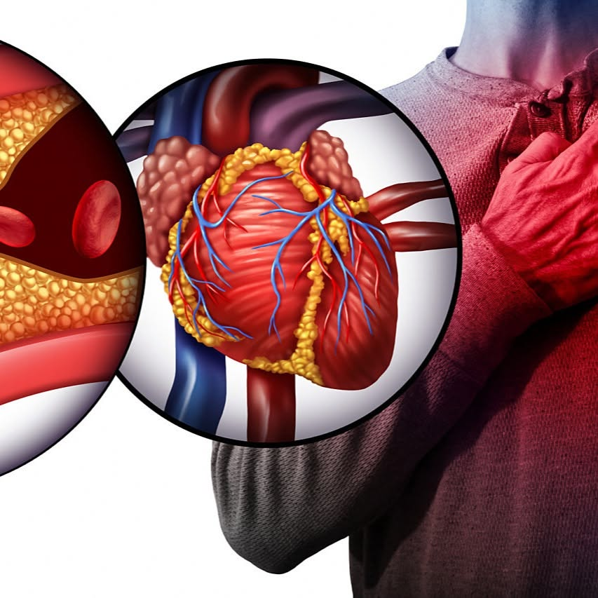
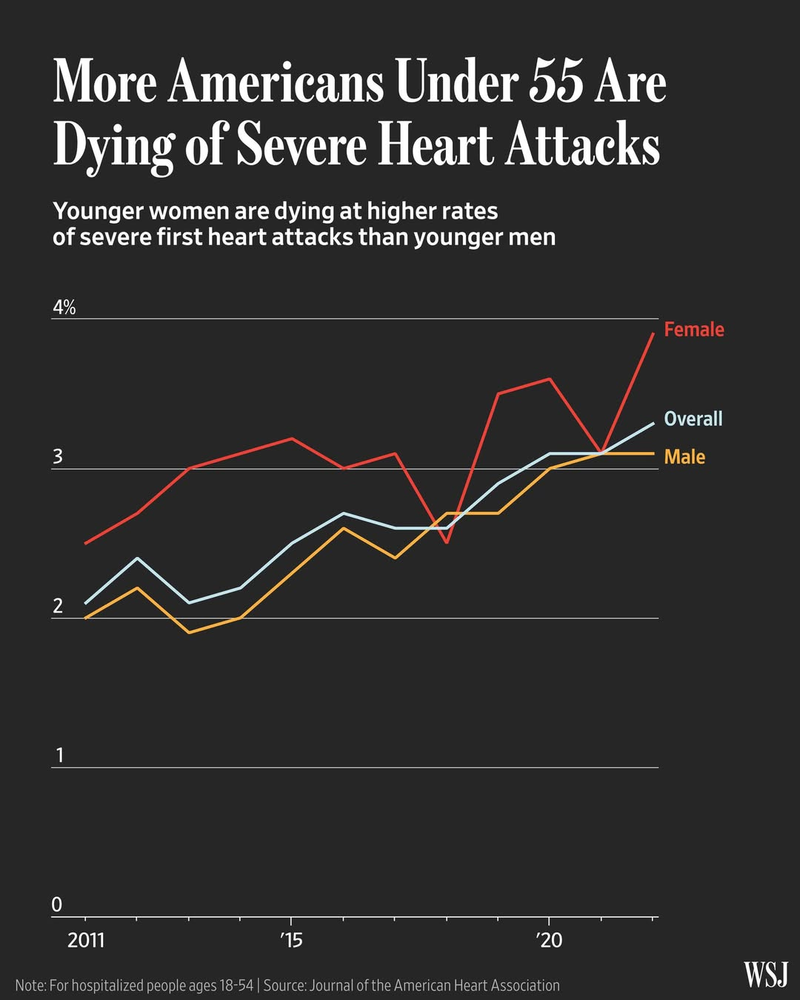
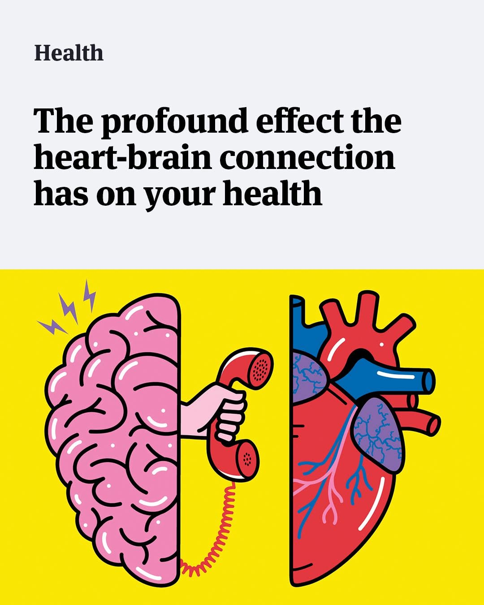

One avocado a week linked to 16% lower CVD and 21% lower CHD over 30 years
Harvard cohort data from about 110,000 people found weekly avocado eaters had lower cardiovascular and coronary heart disease risk than rare or non-eaters.
112 posts (23 primarily about this topic) · 63 reposts and set-aside posts not shown
Harvard cohort data from about 110,000 people found weekly avocado eaters had lower cardiovascular and coronary heart disease risk than rare or non-eaters.
Louis summarizes a Harvard/Brigham cohort analysis of the Nurses' Health Study, HPFS and NHS II covering over 30 years. Higher butter intake was associated with higher all-cause and cancer mortality, while plant oils (especially olive, canola and soybean) were associated with lower all-cause, cancer and cardiovascular mortality.
Louis stresses that evidence for omega-6 protection does not rest on food questionnaires but on blood and tissue measurements tracked prospectively for years before disease. He cites a pooled analysis of 30 cohorts in which people with higher linoleic acid levels had less CVD. He argues that avoiding nuts and seeds to cut omega-6 is likely harmful, and that RCTs on this timescale are impractical.

Louis shares the European Society of Cardiology/EAPC scientific statement on diet and cardiovascular disease. It concludes that diet is a primary factor, that plant-based whole-food patterns lower risk, and that ultraprocessed food, processed and red meat, salt, sugar and saturated fat raise it.

The poster reviews observational studies: a 2012 US cohort (n = 77,510) with 33% lower mortality, UK Biobank (nearly 500,000) with 15% lower cardiovascular events, and a 2020 US cohort (~16,700) with 65% lower CV mortality. He proposes anti-inflammatory and anti-aging mechanisms, noting RCT proof is lacking.

Louis quotes an AHA journal analysis: age-adjusted heart disease mortality fell 66% (761 to 258 per 100,000) from 1970 to 2022, ischemic heart disease deaths fell 81% and MI deaths 89%, while other heart disease including heart failure rose 81%. Life expectancy rose from 70.5 to 77.9 years.

Louis compares hazard ratios from the SCORE O.P. risk model for people over 65. A hazard ratio of 1.16 per year of age compounds to about 19.5x higher CVD death risk between 65 and 85, far larger than diabetes, smoking, high blood pressure or LDL. The numbers used are for women; men are similar. (The post also writes this as 19,500%, which is a mislabel of 19.5x.)

Louis notes US CVD deaths fell from over 500 per 100,000 per year in the 1950s to almost 100 per 100,000 now, and argues this makes blaming vegetable oils for heart disease implausible. This is an ecological argument without cited sources in the post.

An overview of residual-risk drivers beyond cholesterol, blood pressure, diabetes and smoking: gum disease, chronic immune activation, clonal hematopoiesis, gut microbiome metabolites and pollutants. The common thread is chronic inflammation and oxidative stress.
A table of contents linking the group's most useful posts: find a good cardiologist, whether low cholesterol is harmful, when and how much to lower LDL, factors beyond LDL-C, target cholesterol levels, risk calculators, early versus delayed treatment and expected benefits of lifestyle. Mostly links back to other group posts.
Louis reports a randomized trial where blood donation did not reduce heart attacks or strokes but halved cancer deaths after 6 years, possibly through lower iron.

Louis shares a 2023 meta-analysis of 17 studies and 226,889 adults: benefits begin around 4,000 steps with no plateau up to 20,000.
Louis shares a study showing that closely adhering to the AHA's eight healthy-living guidelines for an average of 10 years was associated with 66% lower coronary heart disease risk. He lists the eight guidelines; benefits were larger in women, younger adults and those with low genetic risk per the linked article.

Louis argues that aging is the leading risk factor for nine of the ten top US causes of death (accidents excepted), so lowering disease risk ultimately means slowing aging. He suggests a healthy, lower-calorie diet reduces risk across diseases by slowing aging. Slide and statistics come from Matt Kaeberlein.

Gokhan shares a Frontiers in Pharmacology systematic review on cardiometabolic drugs repurposed for aging in animal studies and clinical trials. He takes several of these drugs, citing mTOR inhibition and lower glucose, lipid spikes, triglycerides and inflammation.

Louis rejects the claim that risk of CVD plus risk of cancer equals zero. Both share age as their main risk factor, so optimizing heart risk factors also lowers cancer risk. In the ARIC cohort (13,253 people, 17-19 years), 6-7 ideal AHA metrics were linked to 51% lower cancer risk than 0 ideal metrics.
A pooled analysis of about 70,000 people from 30 prospective cohorts measured linoleic acid in blood and tissue rather than relying on food questionnaires. Higher levels were associated with lower total CVD, CVD mortality and ischemic stroke, which counters claims that omega-6 or seed oils drive heart disease.
Louis discusses a Nature Communications cohort study and meta-analysis suggesting cheese slightly lowers CVD risk. He cautions that comparisons are typically against the standard American diet, so the result depends on what cheese replaces.
Louis shares an American Heart Association release on a JAHA observational study of more than 2.7 million US women over 10 years. Women with uterine fibroids had over 80% higher long-term heart disease risk, with the strongest link under age 40, suggesting fibroids may be a cardiovascular risk marker.

Louis shares a Life Extension graphic of 17 of the dozens of modifiable heart-disease risk factors. He notes some are far more proven and important than others, but suggests targeting as many as possible. The list itself is only in the image.

Louis rejects claims that heart attacks have increased since the 1950s, saying deaths from heart disease fell about 70% mainly because there are fewer heart attacks and strokes. The shared graph, citing the WHO mortality database, shows deaths per 100,000 dropping from over 500 in 1950 to almost 100 in 2020.

Louis notes that for people of the same age, the annual risk of dying from cardiovascular disease in the US is now about a quarter of what it was in 1950, citing Our World in Data.
Louis shares a May 2024 meta-analysis of the four large Mediterranean diet RCTs (Lyon, Indo-Mediterranean, PREDIMED, CORDIOPREV) with substantial reductions in cardiovascular events, and argues the only RCT of a whole-food plant-based no-oil diet is Ornish's very small trial, with other WFPBNO evidence observational.

Louis notes that achieving the AHA 7 cardiovascular health targets associates with lower cancer as well as heart disease risk, citing the ARIC study.
Article suggesting bisphosphonates may extend life, noting a NEJM trial of yearly zoledronic acid after hip fracture that reduced new fractures by 35% and deaths from any cause by 28%. It also mentions possible cancer, heart and aging benefits, which remain speculative.
Louis quotes a JACC systematic review of 884 randomized trials (883,627 participants) on 27 micronutrients. Omega-3 reduced CVD mortality, heart attack and CHD events; folic acid reduced stroke; CoQ10 reduced all-cause mortality; vitamins C, D, E and selenium had no effect on CVD or type 2 diabetes; beta-carotene increased mortality and stroke. Several others improved risk factors with moderate-to-high quality evidence.
Louis comments on the start of a clinical trial using Yamanaka-factor epigenetic reprogramming to restore youthful cell states in the eye. The eye is the testing site because it is isolated from the body by the blood-ocular barrier, limiting cancer risk. He says if it works and is safe, cardiovascular regeneration could follow, which is speculation.

Louis reposts the WHO-based chart showing US heart disease deaths dropping from over 500 to almost 100 per 100,000 between 1950 and 2020, a larger drop than any other major disease. He attributes the decline mainly to better treatments such as medications, achieved despite a large rise in obesity.

Louis quotes Harvard's Nutrition Source: more than 100 prospective studies show light-to-moderate drinking is linked to a 25-40% lower risk of heart attack, ischemic stroke, peripheral vascular disease, sudden cardiac death and CVD death, and Harvard epidemiologists consider it almost certainly causal. Above 4 drinks a day, risks of hypertension, arrhythmia, stroke, heart attack and death rise. An NIH-funded alcohol trial was stopped. This view is contested and observational.

Louis summarises a Lancet Public Health meta-analysis showing 7,000 steps per day versus 2,000 is associated with lower risk across mortality, CVD, cancer, diabetes, dementia, depression and falls.
Reminder to get vaccinated, linking an earlier admin post. The shared summary lists the flu vaccine with 11-42% lower all-cause mortality in RCTs and prospective cohorts, 43% lower in consistent associations across 40+ studies, and 25-40% lower Alzheimer's risk, citing a cohort study and a systematic review and meta-analysis. Also notes Novavax (non-mRNA) COVID vaccine is no longer available to him.

Louis shares Eric Verdin's argument that age predicts heart disease much more strongly than cholesterol, and that aging biology drives heart disease, stroke, cancers and dementia together. The framing is geroscience: target aging itself rather than managing downstream markers one by one.
Gokhan summarizes a Peter Attia podcast episode with lipidologist Tom Dayspring on why cardiovascular disease is the leading killer. It covers cholesterol imbalance, inflammation and metabolic factors, plus early detection, diagnostic tools and targeted therapies.

Louis calls the JACC Scientific Statement on geroscience the best review so far of why age is the largest CVD risk factor. It argues aging is a common root of chronic disease, explaining multimorbidity, frailty and poorer CVD prognosis in older adults, and describes gerotherapeutic approaches, some already used in CVD care, that could transform management.
A news item on an international Monash University study connecting constipation with higher risk of MACE (heart attack, stroke, heart failure). Constipation affects about 14% of people, so the authors argue gut health deserves attention in cardiovascular prevention.

Louis states that heart disease rates have declined for decades and continue to, mainly from better risk-factor awareness and treatment, and that those who claim otherwise are misinformed. He links a CDC MMWR report; no numbers are given in the post.

Louis shares the REACT study in NEJM of more than 16,000 adults aged 18-70 without known CVD, imaged by vascular ultrasound and CT. About 57% had plaque, rising from 1 in 13 in their 20s to about 9 in 10 in their 60s. Men developed silent disease 5-10 years earlier than women. He concludes age is the biggest risk factor.

A Circulation study (PMID 39324186) found that concentrating exercise on 1-2 days works about as well as spreading it across the week for lowering risk across many disease categories. Total weekly volume of at least 150 minutes of moderate-to-vigorous activity matters more than distribution.

A 2020 Clinical Nutrition meta-analysis of 19 prospective cohorts (1,013,273 participants, 195,515 deaths) found polyunsaturated and monounsaturated fats associated with lower mortality, and saturated and trans fats with higher. Gokhan cautions that data guide rather than prescribe.

Louis shares a WHO mortality graph showing US heart disease deaths fell from over 500 per 100,000 in 1950 to almost 100 in 2020, a larger drop than for any other major disease. He frames heart disease as now a manageable chronic condition if treated aggressively.
Louis shares Cleveland Clinic guidance on hormone therapy and heart disease. HRT can be safe in healthy women under 60 or within 10 years of menopause, but risk rises when started over 10 years after menopause, and women with established CVD (10-year ASCVD risk over 10%) or breast cancer should avoid it. Low risk applies to recent menopause, normal weight and BP, active, and 10-year ASCVD risk under 5%.

Quoting Harvard's Nutrition Source, the post says an analysis of 20 studies with hundreds of thousands of participants found that one to two 3-ounce servings of fatty fish a week (salmon, herring, mackerel, anchovies, sardines) reduces the risk of dying from heart disease by 36 percent. Fish and fish oil are described as good for the heart and blood vessels.
The author describes getting his yearly flu shot plus a Novavax COVID shot, then summarizes evidence that flu vaccination is associated with lower all-cause and cardiovascular mortality. Reported reductions come from both RCTs and cohort studies, though the post flags observational limits.
A meta-analysis of 34 randomized trials in 1,394 participants found oral taurine improved multiple cardiometabolic risk factors compared with placebo or control. Specific markers are not listed in the post.
The post argues that although aggressive LDL/ApoB lowering reduces risk in many RCTs, considerable residual risk remains in every trial, rising with age. It lists other risk factors (family history, blood pressure, smoking, weight, inflammation, diet, inactivity, insulin resistance/diabetes) and says age is the biggest risk factor, by over 10x versus LDL or ApoB.

In the Harvard Nurses' Health Study, a combination of five lifestyle factors was associated with 82% lower heart disease and 90% lower diabetes risk over about 14 years, larger than most drugs. Only 3-4% of nurses achieved all five, and it is a cohort study that cannot establish causation.
Louis shares news of two Nature papers from Mass General Brigham using Framingham Heart Study data linking thymus health in adults to longer life, reduced disease risk and better cancer immunotherapy outcomes.

Louis presents WHO data showing age-adjusted CVD death rates dropped from over 500 to nearly 100 per 100,000 between 1950 and 2019, while life expectancy rose from 68 to 79, and explains why age adjustment matters.

Louis notes US heart disease death rates dropped from over 500 to almost 100 per 100,000 since the 1950s, with timing correlating with statins and lower LDL targets. He quotes a group member's AI-style summary relating MI mortality eras to guideline LDL goals and trials like 4S, PROVE-IT and IMPROVE-IT, with the caveat that correlation is not causation.

A shared post describes a 15-year study in JAMA Internal Medicine linking high added sugar intake to higher heart-disease death. Louis notes it is an observational cohort (Harvard Nurses Study per his comment) that shows associations, not causality.

Shares a Circulation review on sarcopenia and cardiovascular disease, noting a bidirectional relationship and higher risk of mortality and falls. Louis adds that regular resistance exercise is the best way to prevent sarcopenia with age.

UNATI, led by Martinez-Gonzalez, will randomize about 10,000 drinkers (men 50-70, women 55-75, 3-40 drinks per week) to reduce alcohol or drink moderately (under 7/week women, under 14/week men, red wine with meals) for about 4 years. Outcomes include mortality, cardiovascular disease, cancer, diabetes and dementia.

Louis shares a summary of a CARDIA analysis showing people with more atherogenic particles (ApoB, LDL-P, TRL-P) between ages 18 and 40 had 30% higher risk of heart attack or stroke after 40. Risk rose at ApoB above 75 mg/dL per year, and no safe lower limit was found.
Louis summarizes new results from the Harvard Nurses' Health Studies and Health Professionals Follow-up Study, following about 147,000 people for 30 years. Roughly 90-120 minutes a week of strength training was tied to lower all-cause, cardiovascular and neurological mortality, with the largest gains when combined with plenty of aerobic exercise.
Louis argues it is pointless to rank heart disease risk factors, since even top scientists have not settled it, and that aging is by far the largest, more than 10 times greater than any other. He advocates targeting every known risk factor with diet, exercise, supplements and drugs.
Louis recommends a short video (Dr. Daniel Chong with lipidologist Tom Dayspring) on why some people with high LDL avoid plaque. He stresses genetic protection is the exception; LDL/ApoB is one major factor among many, including insulin resistance, inflammation, endothelial dysfunction and blood pressure.
Gokhan flags a Swedish national-register case-control study (Alzheimer's & Dementia, November 2024) examining how duration and combination of cardiovascular drug classes relate to incident dementia, promising a summary later.
Louis shares an Economist article stating gene-editing medicines are advancing rapidly and a new class tackling cardiovascular disease and cancer should gather pace in the coming year. The excerpt gives no trial details.

Luigi Fontana's summary of a NEJM pooled analysis of over 2 million people in 39 countries on blood pressure, non-HDL cholesterol, BMI, diabetes and smoking. At age 50, no risk factors versus all five meant up to 13.3 more CVD-free years and lower lifetime CVD risk; modifying risk factors at 55-60 still helped. Only about half of CVD events are attributable to the five classic factors.

A JAHA study reported by the Wall Street Journal found in-hospital deaths from severe first heart attacks rose in younger US adults. Louis notes overall US heart attack mortality has fallen about 5x since the 1950s, so the recent rise, likely partly obesity-driven, is a disturbing reversal.

A study of 5,416 US women aged 63-97 without prior heart disease, using accelerometers, links more time spent on housework, gardening, cooking and self-care with lower cardiovascular risk. Louis notes that reverse causality is likely but that avoiding sedentary time probably lowers risk.

A JACC CardioOncology study shared by Louis found worse cardiovascular health metrics predict greater cancer risk, with the strongest links for lung and colorectal cancer. This supports shared risk factors across CVD and cancer.
Louis summarizes a Joel Kahn video: there are at least 25 major heart disease risk factors, all of which should be addressed, but LDL is special because it appears necessary for plaque to form. It is not always sufficient, since some people with very high LDL never develop plaque. No other risk factor has been shown to be necessary, which is why cardiologists focus on LDL.
Louis states that epidemiological studies link coffee to a 25% lower risk of heart disease and that mechanistic studies suggest the association may be causal, sharing a ZOE video on coffee and health. No specific study is cited.

Louis notes that over the last 60 years, the sharpest reductions in US heart disease death rates were among people aged 55-64, men and African Americans. The cited paper adds that premature heart disease mortality in adults 25-64 fell 70% since 1968 but has stagnated since 2011.

Louis adds age-related loss of taste and smell to heart disease risk factors, citing a JAMA Otolaryngology finding that poor olfaction is linked to higher CHD risk, especially soon after assessment.
Louis shares a HealthDay report on a CT study of mummies from seven cultures spanning over 4,000 years. More than a third had evidence of clogged arteries, which the researchers say shows humans have an innate risk of atherosclerosis rather than it being solely a product of modern lifestyle.

A shared visual summarizes a 2025 Cell study on when specific organs become most sensitive to aging. It presents aging as a sequence of organ-specific declines rather than one uniform process, with the heart and kidneys among the first to show measurable change from the mid-30s to early 40s.

Louis links the full PREDIMED NEJM publication and corrects an AI summary: the control diet was essentially the AHA diet, not low-fat.
A news share on US findings that human aging is not steady but occurs in two bursts near 44 and 60. The poster suggests this may explain why many diseases, particularly CVD, rise sharply after age 60.
Louis states age is roughly 10x larger as a risk factor than any other, and quotes a Scientific American sponsored piece on geroscience, which holds that aging mechanisms are malleable and healthspan can be extended. The source is sponsored content with no specific study.
Shares a Physionic video asking how much longer you will live if you optimize all your lifestyle factors, answered in the video and comments. The description references a Circulation paper as its source.
Louis shares the AHA's cardiovascular-kidney-metabolic syndrome initiative, and argues heart, kidney and metabolic disease are in aggregate one disease.
Harvard Gazette: CVD deaths fell 70% from the late 1960s but leveled off around 2010; experts cite lack of urgency among doctors and patients and healthcare barriers.

A one-line post noting hypothyroidism as a CVD risk factor, with a Cleveland Clinic definition of the condition. No data or study is cited.
Brief claim that genetics may explain up to half of fatal coronary artery disease risk; the linked content is no longer available.
A shared SuppVersity summary of the 20-year Greek ATTICA cohort (3,042 adults): metabolically healthy obesity had HR 1.39 for CVD versus metabolically healthy normal weight, and unhealthy obesity HR 1.85.

Louis shares a JAHA study showing men develop CVD about 7 years earlier, mainly from earlier coronary heart disease, with differences emerging by age 35 and persisting after adjusting for risk factors. The shared post discusses visceral fat as a possible contributor.

A JACC CardioOncology review examines clonal hematopoiesis of indeterminate potential, an age-related mutation in blood stem cell lines, as a shared risk factor for both cardiovascular disease and cancer. Louis notes that evidence keeps accumulating.

A shared summary of an ESC Congress study of nearly 91,000 UK Biobank participants found those who slept in on weekends had 20% lower heart disease risk, especially those sleep-deprived during the week. Catch-up sleep cannot fully offset chronic weekday sleep loss.

Louis shares a meta-analysis (PMID 38599681) showing higher cardiorespiratory fitness tracks with lower mortality in a dose-dependent way, while noting reverse causality is possible. A 1-MET increase was associated with large reductions in heart failure and cardiovascular mortality.
Louis shares a Vox piece on the link between Alzheimer's disease and cardiovascular health, and argues that preventing cardiovascular disease is a way to prevent Alzheimer's. The linked article describes a growing body of research on the connection.
A detailed analysis argues that risk depends on both how high LDL is and for how long, drawing on Mendelian randomization, long-term cohorts and familial hypercholesterolemia. Lifelong lower LDL gives a far larger benefit per mg/dL than late statin treatment, which supports early and sustained control.

Louis links a Population Reference Bureau report on US trends in heart disease, cancer and stroke.
Louis shares a CNN report on a review of 45 meta-analyses covering almost 10 million people. Higher ultra-processed food intake was linked to over 70% of the 45 health outcomes assessed, with strong evidence of roughly 50% higher risk of cardiovascular death and common mental disorders. Associations are observational.

Argues that excess weight is the most important modifiable CVD risk factor, with lowest mortality at a BMI of 20-24. Lifestyle-driven weight loss of 5.5 kg was linked to 15% lower all-cause mortality in an RCT meta-analysis, and bariatric surgery to 38-41% lower mortality in observational pooled data.
Louis shares news of two studies where AI measured thymus size and composition on routine CT scans to create a thymic health score. Higher scores were associated with lower mortality, and he notes calorie restriction and cardio exercise may slow thymic shrinkage.

Louis shares a GeroScience note on a new study reporting that low genetic risk for CAD is associated with multigenerational longevity and healthier aging, suggesting heart health and lifespan share genetic foundations.

Louis shares a chart (WHO mortality database) showing US heart disease deaths dropped from over 500 per 100,000 in 1950 to almost 100 in 2020, the largest fall of any major disease.
A shared video in which Rhonda Patrick and Bill Harris explain why the omega-6:omega-3 ratio does not predict heart disease or diabetes. Louis notes Harris co-authored two large biomarker studies linking higher omega-6 to lower risk.

Medscape reports 239,907 women in NHS and NHS II: hysterectomy before age 50 increased CVD risk, with 21% higher risk under 46 who didn't use estrogen.
A JAMA Cardiology analysis of US IHD deaths 1990-2023 attributed 88% to modifiable risk factors, led by high blood pressure, diet and high LDL. Death rates fell mainly through better treatment, while weight and blood sugar worsened.

Louis shares an AHA release showing that adults with type 2 diabetes and high genetic dementia risk who had moderate or high Life's Essential 8 cardiovascular health had much lower risk of mild cognitive impairment and dementia over 13 years. The eight factors are blood pressure, cholesterol, fasting glucose, smoking, BMI, exercise, diet and sleep.

Louis shares a JACC piece arguing that cognitive impairment and CVD share the same biological drivers: chronic inflammation, insulin resistance, hypertension, dyslipidemia, oxidative stress, endothelial dysfunction and atherosclerosis. It suggests lifestyle strategies such as diet, exercise, stress reduction and sleep can address both.
A bioRxiv preprint reports that donor hearts assimilate the biological age of the recipient: older hearts in younger bodies showed signs of rejuvenation, and young hearts in older bodies showed accelerated aging, in mice and humans. The poster relates it to parabiosis experiments and notes implications for donor organ allocation.

Louis quotes a statement arguing that cardiometabolic risk is cumulative and multifactorial, that interventions on different pathways give additive rather than competing benefits, and that lifestyle remains foundational while drugs targeting LDL-driven atherogenesis can add durable effect. He posts it as a counter to influencers who pit the two against each other.

Louis shares an Our World in Data chart showing adults, not only children, are living longer. A French 80-year-old gains 5 years, a 65-year-old almost 10 and a 45-year-old almost 15 compared with 1950.

Louis stresses that kidney and cardiovascular health are tightly linked: kidney disease raises CVD risk and protecting against atherosclerosis lowers the risk of kidney disease. The shared American Journal of Kidney Diseases study (Lee et al) found young adults with better cardiovascular health had lower later risk of both conditions, and improving or maintaining it helped.
Louis shares Layne Norton's summary of a 2026 Lipids in Health and Disease study in people with hyperlipidemia. Higher fiber intake was linked to lower all-cause and cardiovascular mortality with a dose-response, consistent with a broader evidence base across over 17 million subjects.

Louis reshares his summary of protein intake and mortality in nearly 300,000 people followed over 30 years in the Nurses' Health Studies and Health Professionals Follow-up Study. Plant protein was protective, fish and poultry slightly so, dairy and eggs neutral, while unprocessed red meat modestly and processed meat very strongly raised mortality.

Medscape promotes educational content on how inflammation raises heart health risks and how patients can limit it. No findings are given.
Louis notes that people with genetically low IGF1 (Laron syndrome) have very low rates of cancer, diabetes and Alzheimer's, and a recent study suggests lower cardiovascular risk too. The linked Nature news piece describes lower blood sugar and insulin resistance in these individuals, hinting at new treatment strategies.

Louis shares a New Scientist article on the emerging heart-brain axis, saying cognitive decline, mental health and heart disease are shaped by shared factors and that this is influencing diagnosis and treatment. No details are given in the post itself.
Louis shares a report on a JAMA Psychiatry nested case-control study from Karolinska Institutet. Long-term ADHD drug use was associated with 4% greater CVD risk per year of use, with the largest rise in the first three years, in children and adults, females and males. Hypertension and arterial disease drove most of the association, and stimulants were also linked. Observational, so association not proof of causation.

Links the new AHA risk calculator, which uses sex, age, BMI, blood pressure, cholesterol, smoking and diabetes to give 10- and 30-year risk. Louis warns it is for primary prevention only and will underestimate risk in people with prior events, significant atherosclerosis or high calcium scores.
First nationally representative Omega-3 Index data from NHANES show 54% of Americans below 4% and nearly 98% below the optimal 8%. Louis suggests this may raise CVD risk.

Louis shares a 2026 review of microplastic and nanoplastic effects on cardiovascular health and candidate mechanisms (inflammation, oxidative stress, mitochondrial dysfunction). He stresses the link is still speculative, though biologically plausible.

Louis notes heart disease deaths have started dropping after flatlining, citing an AHA report. It remains the leading US cause of death.
Louis shares (via a paywall bypass) a 2022 NYT piece quoting Harvard's Frank Hu and the American Cancer Society on processed meat. Experts say regular processed-meat intake is linked to colorectal cancer, type 2 diabetes and cardiovascular disease, and that curing with nitrates/nitrites, which can create nitrosamines, may be a key culprit.
Louis shares a summary of a JAMA study following more than 37,000 US children born 1959-1966 into their mid-50s. Children with higher blood pressure at age 7 had greater risk of premature CVD death, suggesting BP should be monitored from grade school.

A shared summary of a JACC study applying the AHA PREVENT equations to US adults aged 30 to 79, showing high burden of existing or predicted cardiovascular disease, higher risk in men, Black and Hispanic adults, and an elevated 30-year risk in about two-thirds of middle-aged adults without CVD.
Louis notes that heart tissue is naturally resistant to cancer and that researchers are beginning to understand the reason. The shared content is unavailable, so no details are given.